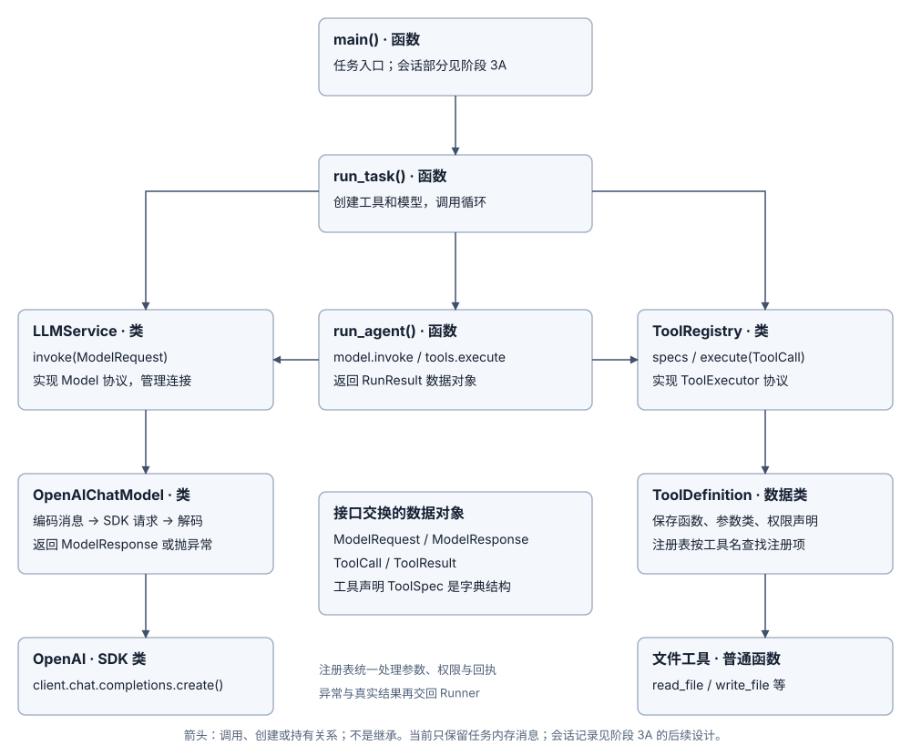

Stage 1: Split Single File & Define Module Interfaces
In the single-file script from Stage 0, loop control, SDK protocol conversion, and file reading were all mixed together—adding a new tool required editing an if/else dispatch branch, and switching model services required changing the main loop. In this stage, we split that single file into three focused modules: Tools handles tool registration and execution, Model handles model communication and protocol conversion, and Runner drives the loop.
1. Tools: Define Tools, Centralize Registration & Execution
For general principles, see the Tools Module Guide. In the current implementation, ToolDefinition stores the tool name, description, parameter model, execution function, and permission declaration; ToolRegistry looks up tools by name and uniformly handles argument validation, permission checks (covered in Stage 2), function execution, and result wrapping. Four tools are registered by default: list_files, read_file, search_text, and write_file.
- Tool interface contracts (contracts.py): Defines
ToolDefinition,ToolSpec,ToolCall,ToolResult, and theToolExecutorprotocol. - Tool registry (registry.py): Handles tool registration, schema generation, argument validation, unified permission checks, and exception conversion.
- Local file tools (filesystem.py): Each tool is a plain function sharing workspace path resolution and resource checks.
All tools execute synchronously within the current process: invalid arguments and expected file operation failures are uniformly wrapped into a ToolResult and returned to the model, whereas duplicate registrations or code bugs raise exceptions directly.
Expand current tool execution flow

How to add a new tool: Simply write a plain Python function, define its parameter model, required permission, and path parameter name, and call register()—no changes to registry.py or Runner are needed.
2. Model: Unify Requests & Responses, Isolate the SDK Protocol
For general principles, see the Model Module Guide. Currently, LLMService.invoke() accepts a unified ModelRequest and returns a ModelResponse or raises a ModelError. The API key, base URL, and SDK client lifecycle are managed inside the service, which adapts the Chat Completions protocol through OpenAIChatModel.
- Model interface contracts (contracts.py): Defines the
Modelprotocol,ModelRequest,ModelResponse, and internal message types. - Model service (service.py):
LLMServicereads configuration and creates the SDK client on initialization, forwards requests viainvoke(), and releases connections viaclose(). - Protocol adapter (openai_chat.py): Encodes internal messages into SDK format, makes network requests, decodes responses, and converts exceptions.
In addition to preserving text, tool call IDs, stop reasons, and token usage, every model response preserves continuation data (protocol data that the model service requires carrying back on subsequent turns, such as reasoning items) verbatim, and the adapter automatically encodes it into the next request. If output truncation, refusal, protocol error, or connection failure occurs, it raises an error immediately to stop the loop.
3. Runner: Connect Model & Tools Through Unified Interfaces
From the entry point main() to run_task(), the application layer wires everything in sequence: receive user task → configure workspace directory workspace and permission policy → create ToolRegistry and LLMService → call run_agent() → close the model connection in a finally block and return the result.
Inside run_agent(), the Runner is completely decoupled from SDK-specific fields and concrete tool functions, advancing the loop in fixed steps:
- Request the model: Reads
specsfrom the tool registry, assembles aModelRequestwith the current message sequence, and callsmodel.invoke(). - Save and check the response: Appends the full
ModelResponseto the message sequence and verifies that the response finished normally. - Dispatch tool calls: If the response contains
ToolCallitems, passes each one totools.execute(), appends the returnedToolResultto the message sequence, and continues to the next model request. - Return the final result: If there are no tool calls and the answer is non-empty, returns a
RunResultcontaining the final answer and the list of tool results; if the step limit is reached without finishing, raises an error and stops.
For the black-box contracts between modules, see Runner ↔ Tools and Runner ↔ Model.
3.1 Functions, Classes & Protocols in the Source Code
main(), run_task(), and run_agent() are functions; LLMService holds the SDK client and OpenAIChatModel adapter; ToolRegistry holds ToolDefinition entries indexed by name; and Model and ToolExecutor are the interface protocols (Protocol) that Runner depends on.

3.2 Tracing a Complete Call Chain Along read_file
- Assemble registry and model service: run_task() creates
ToolRegistry(DEFAULT_TOOLS, workspace, policy)(generating tool schemas from parameter models) and LLMService, then passes both torun_agent(). - Encode and request the model: Runner constructs a
ModelRequestand callsLLMService.invoke(), which delegates to OpenAIChatModel.invoke() to encode messages, call the SDK, decode the response, and return aModelResponse. - Validate and execute the tool: Runner passes the
ToolCalltoToolRegistry.execute(). After argument validation and the Policy permission check, the registry callsread_file()to read the file and wraps the output into aToolResult. - Proceed to the next turn and clean up: The full model response and tool result enter the next request; once the final answer is produced,
RunResultis returned and the model service connection is closed in thefinallyblock.
3.3 Where Runtime Data Lives
Tool definitions, argument objects, and network connections live in memory; the message sequence for a single task is maintained in an in-memory list inside Runner (cross-process persistence is introduced in Stage 3).
4. Running & Verification
uv sync --locked
uv run python -m learn_agent "在资料中找到验收标记，告诉我来源和行号"
Expected Outcomes
- Decoupled and extensible modules: Adding a tool only requires writing a plain function and calling
register()without modifyingregistry.pyorRunner; swapping the model protocol adapter requires no changes to any tool implementation. - Intact call correlation and protocol data: Tool results are paired via
call_id, and full model responses along with continuation protocol data are automatically carried into the next request. - Strict error boundary separation: Expected tool execution failures are returned to the model as tool results, while truncated model outputs, refusals, or network failures immediately stop the loop without accidentally triggering tool execution.
Run uv run pytest locally; the corresponding unit tests are in test_tools.py and test_models.py.